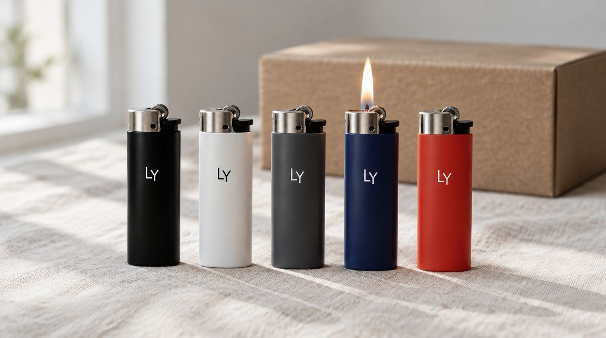

Kafe, restoran, bar ve bayi için logolu promosyon çakmağı; isimli ve tasarımlı kişiye özel çakmak. Beyaz, siyah, renkli gövde; tek renk ya da tam renkli baskı.

Çakmak, promosyon ürünleri arasında en çok el değiştireni: masada unutuluyor, ödünç veriliyor, cepten cebe geçiyor. Üstündeki logo bu yüzden bir kişiye değil, birkaç kişiye ulaşıyor. Küçük bir baskı alanı var; tasarımı buna göre sadeleştirmek işin yarısı.
Gövde rengini ve baskı rengini birlikte seçiyoruz; koyu gövdede açık logo, açık gövdede kurumsal renk. Tam renkli baskı da mümkün ama küçük alanda tek renk çoğu zaman daha net okunuyor.
Çakmağı en çok kafe, restoran, bar, benzin istasyonu, oto yıkama ve tekel bayileri kullanıyor: kasada verilen, masaya bırakılan, müşteriyle giden en ucuz reklam. Logo ve telefon numarası ya da Instagram adı en işlevli kombinasyon; adres ve slogan bu alana sığmıyor, sığdırmaya çalışmıyoruz.
Adede göre üretiliyor; renk karışık olabiliyor (siyah, beyaz, kırmızı, mavi, yeşil gövde aynı siparişte). Tekrar siparişte aynı gövde ve aynı baskı dosyası.
Kişiye özel çakmakta konu isim ve şaka: bir arkadaşın lakabı, bir çiftin tarihi, bekarlığa veda için grubun içi sözü, doğum günü için kısa bir çizim. Tek adet basıyoruz; kutuya koyup not kartı ekliyoruz.
Düğün ve nişan masalarında misafire bırakılan isimli çakmak, kına gecesinde dağıtılan tarihli çakmak da sık gelen işler; misafir sayısına göre karışık renkte üretiliyor.
Ürün: plastik gövdeli doldurulabilir çakmak; siyah, beyaz, kırmızı, mavi, yeşil, sarı ve stoğa göre diğer gövde renkleri; metal gövdeli seçenek de var.
Baskı alanı: gövdenin ön yüzü, isteğe göre iki yüz; küçük alan olduğu için logo sadeleştirilip yazı kalınlığı ayarlanıyor.
Baskı: tek renk ya da tam renkli; koyu gövdede beyaz alt katman. Baskı gövdeye yapışık, tırnakla kazınmıyor, alevden uzak bölgede.
Plastik mi metal mi, hangi renkler, kaç adet; karışık renk mümkün.
Logo çakmak ölçüsüne göre sadeleştiriliyor; gövde üstünde ekranda gösteriliyor.
Onaydan sonra basılıyor; ilk parça okunurluk için kontrol ediliyor.
Kutulu ya da toplu paket; hediye siparişinde tek kutu ve not kartı.
Baskılı Kalem · Kişiye Özel Anahtarlık · Magnetli Kapak Açacağı · Tüm baskı ve hediye ürünleri
Gövdeye yapışık bir katman, normal kullanımda silinmiyor. Sert bir cisimle kazınırsa çizilebilir; alev bölgesinden uzakta durduğu için ısıdan etkilenmiyor.
Alan küçük olduğu için tek renk logo daha net okunuyor; çok renkli logoyu tek renge indirmek gerektiğinde bunu tasarımda gösteriyoruz. Fotoğraf ve degrade istenirse tam renkli basıyoruz.
Olabilir. Aynı siparişte beş rengi de karıştırabilirsiniz; adet dağılımını listede yazıyorsunuz.
Logo ile birlikte biri sığıyor, ikisi zorlanıyor. Kafe ve bar için genellikle Instagram adı, servis işleri için telefon öneriyoruz.
Evet. Tek adet isimli çakmak basıyoruz; kutu ve not kartı isteğe bağlı.
İletişim
Kaç adet, hangi renk, üstünde ne yazsın — yazın; tasarımı gövde üstünde gösterelim.